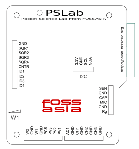
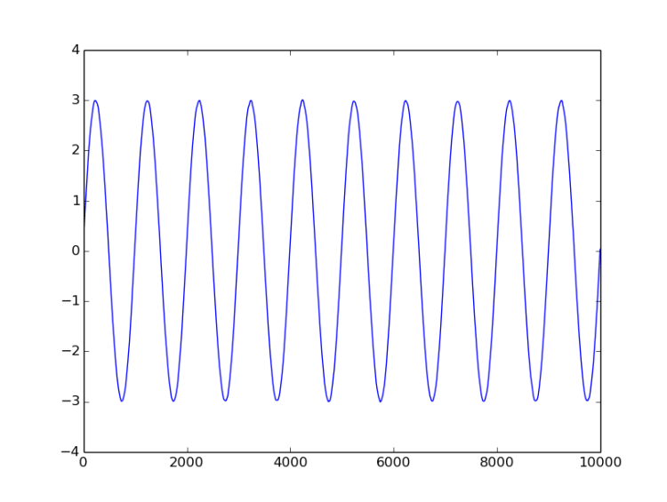
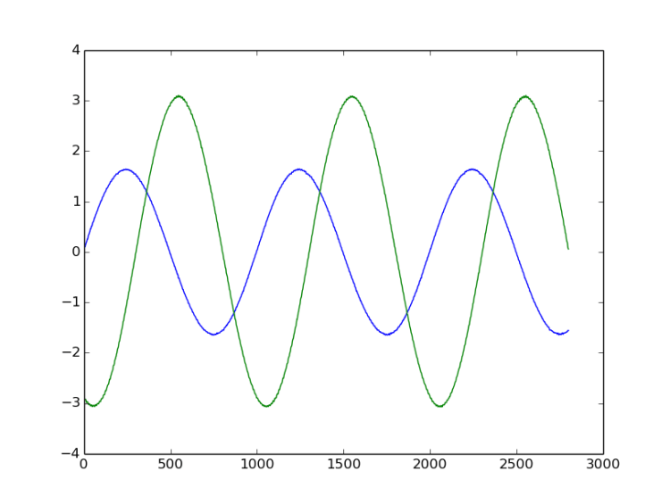
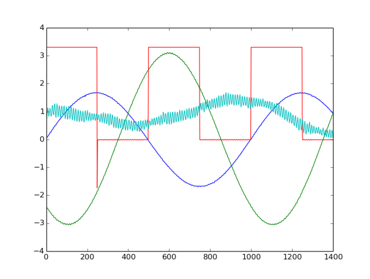

The goal of PSLab is to create an Open Source hardware device (open on all layers) that can be used for experiments by teachers, students and citizen scientists. Our tiny pocket lab provides an array of sensors for doing science and engineering experiments. It provides functions of numerous measurement devices including an oscilloscope, a waveform generator, a frequency counter, a programmable voltage, current source and as a data logger.
We are developing the experiments starting on the hardware to libraries and user interfaces for desktop PCs and Android apps for smartphones. The PSLab project is inspired by the work of the Open Science Hardware community and the ExpEYES project. Our website is at: http://pslab.fossasia.org
Communication
Please join us on the following channels:
Communicating with Pocket Science Lab via USB and understanding the various read/write functions
Design of PSLab combines the flexibility of Python programming language and the real-time measurement capability of micro-controllers.
PSLab, with its simple and open architecture allows users to use the tool for various measurements and to develop new experiments with simple functions written in python.
It is interfaced and powered by USB port of the computer. For connecting external signals it has several input/output terminals as shown in the following figure.

Interfacing with the real world. One small Python script at a time
Example1.py : Connecting to the device , and read a voltage value from one of the analog inputs
from PSL import sciencelab
I = sciencelab.connect() #Returns None if device isn't found
# An example function that measures voltage present at the specified analog input
print I.get_average_voltage('CH1')
The module sciencelab.py contains all the functions required for communicating with PSLab hardware. It also contains some utility functions. The class ScienceLab() contains methods that can be used to interact with the PSLab. The connect() function returns an instance of this class if PSLab hardware is detected.
The ScienceLab class does the following crucial jobs during the creation of an instance.
- Scan for ttyACM devices, and attempt to read device version if the vendor and product IDs match, and the device appears to be unopened by any other instance.
- Load calibration constants, polynomials, and tables
- Create a socket to indicate ownership of the device being used
Once the device has been succesfully opened, the instance of ScienceLab.py can be used to access its various features. Here’s an example script to read values from a magnetometer connected to the I2C port of the PSLab
from PSL import sciencelab
I = sciencelab.connect() #Returns None if device isn't found
from PSL.SENSORS import HMC5883L #A 3-axis magnetometer
M = HMC5883L.connect(I.I2C) #Specify that the I2C bridge is to be used
Gx,Gy,Gz = M.getRaw() #Returns three decimal numbers that indicate magnetic fields along orthogonal axes
Example 3 : Capturing a sine wave, and plotting it using matplotlib
The function call that is used for acquisition
capture1(channel name,number of samples,time gap (uS) between samples, *optional keyword arguments)
- Channel name : Any one of the analog inputs available : ‘CH1’,’CH2’,’CH3’,’MIC’,’SEN’,’CAP’,’AN8’
- Number of samples : total voltage samples to read (Maximum 10000 samples)
- time gap : The time delay between successive samples
>>> from PSL import sciencelab #These first two lines are always used to create the instance,
>>> I = sciencelab.connect() #and will not be repeated in further examples.
>>> I.set_gain('CH1', 3) # set input CH1 to +/-4V range
>>> I.set_sine1(1000) # generate 1kHz sine wave on the waveform generator W1
>>> #USE A WIRE TO CONNECT W1 to CH1.
>>> x,y = I.capture1('CH1', 1000, 10) # measure the voltage at CH1 1000 times, with 10uS interval between successive samples
>>> from pylab import * #Import the plotting library
>>> plot(x,y) #Plot the time axis against the voltage data
>>> show() #display the plot
The following image displays the plot output

Example 4 : Capturing two sine waves, and plotting them
The function call that is used for acquisition
capture2(number of samples,time gap (uS) between samples, TraceOneRemap)
- Number of samples : total voltage samples to read (Maximum 5000 samples)
- time gap : The time delay between successive samples
- TraceOneRemap(optional) : This function returns data from CH1 and CH2 by default, but CH1 can be replaced by any one of the analog inputs available : ‘CH1’,’CH2’,’CH3’,’MIC’,’SEN’,’CAP’,’AN8’ . Channel 2 is always CH2
# -*- coding: utf-8 -*-
from pylab import *
from PSL import sciencelab
I=sciencelab.connect()
I.set_gain('CH1', 2) # set input CH1 to +/-4V range
I.set_gain('CH2', 3) # set input CH2 to +/-4V range
I.set_sine1(1000) # generate 1kHz sine wave on output W1
I.set_sine2(1000) # generate 1kHz sine wave on output W2
#Connect W1 to CH1, and W2 to CH2. W1 can be attenuated using the manual amplitude knob on the PSlab
x,y1,y2 = I.capture2(1600,1.75,'CH1')
plot(x,y1) #Plot of analog input CH1
plot(x,y2) #plot of analog input CH2
show()
Resultant plot :

Example 5 : Capturing four oscilloscope traces simultaneously from various analog inputs
The function call that is used for acquisition
capture4(number of samples,time gap (uS) between samples, TraceOneRemap)
- Number of samples : total voltage samples to read (Maximum 2500 samples)
- time gap : The time delay between successive samples. Minimum 2uS, Maximum 8000
- TraceOneRemap(optional) : This function returns data from CH1,CH2,CH3,MIC by default, but CH1 can be replaced by any one of the analog inputs available : ‘CH1’,’CH2’,’CH3’,’MIC’,’SEN’,’CAP’,’AN8’ . the other three channels are fixed
# -*- coding: utf-8 -*-
from pylab import *
from PSL import sciencelab
I=sciencelab.connect()
I.set_gain('CH1', 2) # set input CH1 to +/-4V range
I.set_gain('CH2', 3) # set input CH2 to +/-4V range
I.set_sine1(1000) # generate 1kHz sine wave on output W1
I.set_sine2(1000) # generate 1kHz sine wave on output W2
I.sqr1(2000,duty_cycle=50) # generate 1kHz square wave on output SQR1
#Connect SQR1 to CH1
#Connect W1 to CH2, and W2 to CH3. W1 can be attenuated using the manual amplitude knob on the PSlab
x,y1,y2,y3,y4 = I.capture4(1600,1.75,'CH1')
plot(x,y1) #Plot of analog input CH1
plot(x,y2) #plot of analog input CH2
plot(x,y3) #plot of analog input CH3
plot(x,y4) #plot of analog input CH4 : MIC
show()
Resultant plot :

#code snippet example
import numpy as np
x=np.linspace(0,np.pi*2,1000)
from pylab import *
plot(x,np.sin(x))
show()